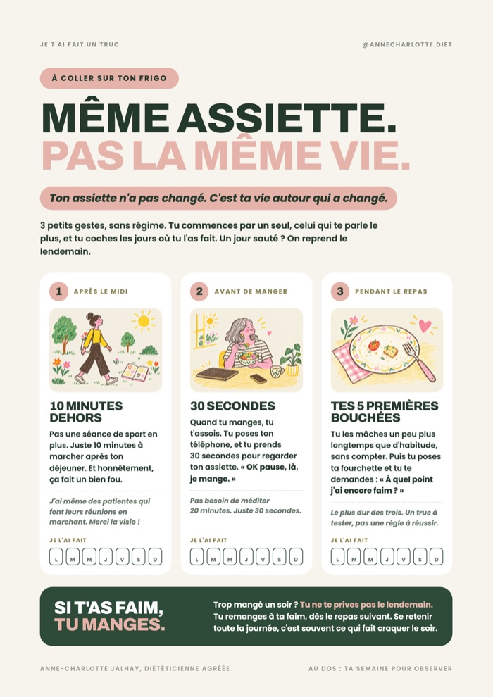

Anne-CharlotteDiététicienne
@annecharlotte.diet
La fiche frigo de la vidéo
Même assiette.
3 petits gestes. Sans régime.
Même assiette.
Pas la même vie.
3 petits gestes. Sans régime.
Ton assiette n’a pas changé. C’est ta vie autour qui a changé. La marche de 10 minutes, les 30 secondes avant de manger, les 5 premières bouchées : tout est sur une feuille, à imprimer et à coller sur ton frigo.
Télécharger la fiche PDF gratuit · 2 pages · 1 Mo- Au recto, les 3 gestes de la vidéo, à cocher chaque jour
- Au verso, ta semaine pour observer ta faim, ta nuit et si t’as bougé
- Le jour 7, 3 questions pour relire ta semaine
